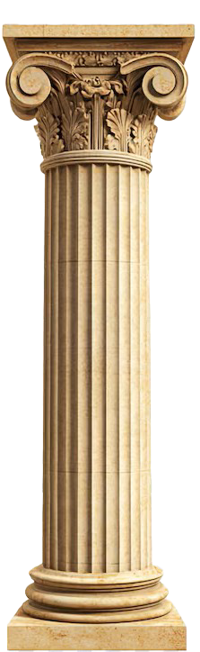

Sobre nosotros
Espacio para contar la historia, la misión o los valores de Campeones.
Contacto
Aquí puedes agregar un formulario, tu correo o enlaces a redes sociales.

Espacio para contar la historia, la misión o los valores de Campeones.
Aquí puedes agregar un formulario, tu correo o enlaces a redes sociales.